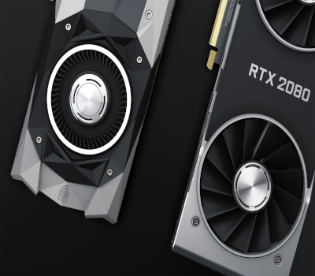

PLACAS DE VÍDEO
Para que serve uma placa de vídeo?
19.10.2026

A placa de vídeo é um componente responsável pelo processamento gráfico de um computador. Ela permite exibir imagens, vídeos, animações e gráficos na tela, sendo especialmente importante para jogos, edição de vídeos, modelagem 3D e outras tarefas que exigem maior capacidade gráfica.
A GPU (Graphics Processing Unit) é o processador responsável por realizar cálculos gráficos. Ela trabalha com milhares de operações simultâneas, ajudando a gerar imagens e renderizar cenários complexos com eficiência.
Embora seja muito associada aos jogos, a GPU também pode acelerar tarefas como edição de imagens, inteligência artificial e processamento de dados.
Existem dois tipos principais de processamento gráfico:
A quantidade de VRAM, a capacidade de processamento, o consumo de energia e a compatibilidade com os demais componentes são fatores importantes. Também é necessário considerar o objetivo de uso: tarefas básicas podem funcionar bem com gráficos integrados, enquanto jogos exigentes e trabalhos profissionais podem precisar de uma GPU dedicada.
Conclusão: a placa de vídeo desempenha um papel fundamental na qualidade visual e no desempenho gráfico do computador. Entender suas características ajuda a escolher uma solução adequada para estudar, trabalhar, jogar ou desenvolver projetos criativos.
Henrique Castro Lopes é estudante de Engenharia de Software Pela Fametro em no 2º período em 2026, e no momento fazendo o curso de HTML5 e CSS3 com Gustavo Guanabara no cursoemvideo do módulo 1 ao 5